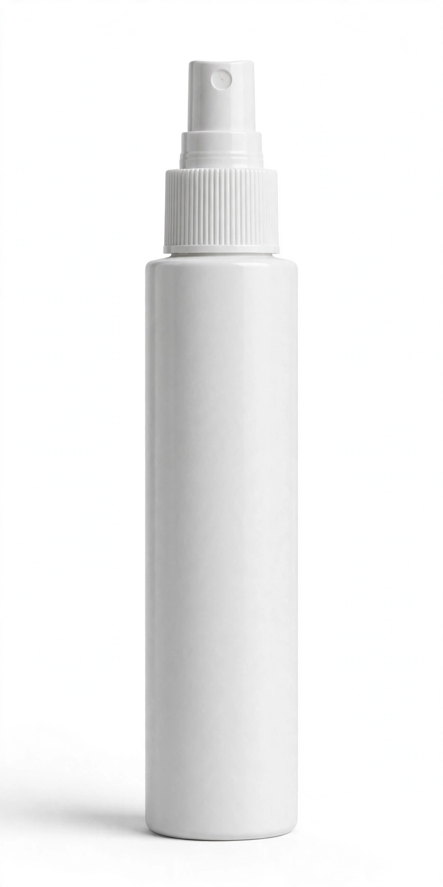

Label pribadi · MOQ 1,000 unit per SKU
Apa itu Semprotan Pembersih Houttuynia label pribadi?
Sebuah semprotan pembersih bebas bilas dibangun sekitar 89% ekstrak heartleaf, kolagen hidrolisis dan sodium hyaluronate, untuk merek yang ingin cerita bebas bilas lembut. Luncurkan di bawah merek Anda sendiri di MOQ 1,000 unit, atau kustomisasi dengan tim pabrik. Ini adalah rumus referensi: setiap pesanan adalah sampel dan disesuaikan dengan persyaratan merek Anda — tidak ada produk standar siap pakai.
- Format
- Semprotan pembersih
- Arah kunci
- 89% ekstrak heartleaf, pembersihan bebas bilas
- Terbaik untuk
- Merek dengan lembut bilas bebas membersihkan cerita
- Pak disarankan
- Penyemprot botol, 100 ml konfirmasi per pesanan
- MOQ
- 1,000 unit per SKU
- Waktu tunggu
- Konfirmasi per pesanan
Tentang rumus ini
Mengapa merek mulai dari rumus ini
Sebuah semprotan pembersih bebas bilas dibangun sekitar 89% ekstrak heartleaf, kolagen hidrolisis dan sodium hyaluronate, untuk merek yang ingin cerita bebas bilas lembut. Ini adalah rumus referensi: setiap pesanan adalah sampel dan disesuaikan dengan persyaratan merek Anda — tidak ada produk standar siap pakai.
Mengapa merek memilih formula ini
- Ekstrak heartleaf 89% Inti dari semprotan pembersih bebas bilas ini.
- Kolagen hidrolisis dan sodium hyaluronate Dipasangkan dengan ekstrak daun jantung dalam semprotan ini.
- Pembersihan bebas-riring Sebuah cerita bebas bilas lembut, tanpa langkah mengrinsing.
- Semprot botol, 100 ml — Paket yang disarankan adalah botol semprot 100 ml, dikonfirmasi sesuai pesanan.
Bagaimana merek menggunakannya
Produk pahlawan dari garis bebas bilas lembut; a alami ditambahkan-on untuk merek yang sudah menjual pembersih dan ingin langkah semprot bebas bilas; atau semprotan pembersih pertama dari jangkauan peluncuran merek baru.
Sering kali mengajukan pertanyaan
Apa ini produk yang bisa kupesan?
Tidak, ini adalah rumus referensi. dan menyetujui sampel sebelum produksi besar.
Berapa jumlah pesanan minimumnya?
1,000 unit per SKU.
Dapatkah saya mengubah format pak?
Ya. paket yang disarankan adalah botol semprot 100 ml, dan format pak dikonfirmasi per pesanan. daftar penuh INCI dan konsentrasi akhir dikonfirmasi per pesanan, dan harga dikutip per pesanan.
End-to-end OEM untuk merek Anda
Apa yang kita menangani untuk merek Anda
- Pengembangan Formula — Mulailah dari rumus yang siap pakai ini, atau tingkat penyesuaian, tekstur dan keharuman yang diarahkan oleh tim pabrik.
- Produksi Bulk — MOQ 1,000 unit per SKU, dengan pemeriksaan kualitas di setiap tahap.
- Label pribadi — Logo dan karya seni Anda pada botol, tempayan, tabung atau kotak; karya seni disetujui sebelum dicetak.
- Dukungan regulator SGS ISO 22716 diverifikasi; berkas spesifik pasar (EU CPSR / CPNP, US FDA / MoCRA, Halal) dikonfirmasi per pesanan.
Dapatkah rumus ini disesuaikan?
Ya, mulai dari rumus ini sebagai referensimu, lalu sesuaikan dengan tim pabrik untuk persyaratan merek Anda bagaimanapun, Anda menyetujui sampel sebelum produksi besar. bagaimana sampling bekerja.
Apa yang harus dikirim dengan penyelidikan Anda
- Pasar target Anda (EU, Amerika Serikat, Timur Tengah atau tempat lain) kebutuhan sertifikasi berbeda dengan pasar
- Format pak dan ukuran yang Anda lebih suka
- Kuantitas per SKU (MOQ 1,000)
Daftar penuh INCI dan konsentrasi akhir dikonfirmasi setiap pesanan. Tidak ada harga yang tetap yang diterbitkan; harganya dikutip per pesanan.
Rumus terkait

MOQ 1,000
Pembersih Wajah Teh Hijau
Pemurni wajah teh hijau, kontrol minyak 150 g